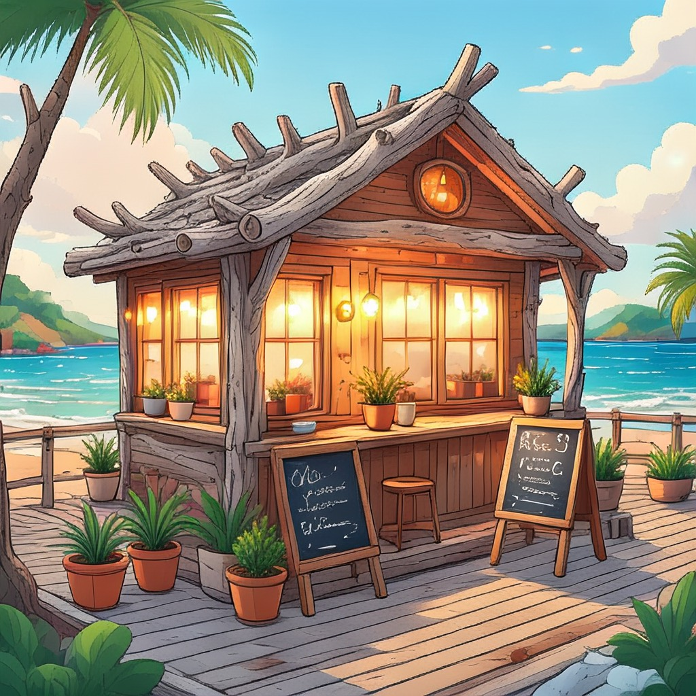

Juno
River otter · Driftwood Cafe
Cheerful barista at Driftwood Cafe. Remembers everyone's usual.
by @lanternbay
And everything stays there.
Hearth is a cozy chat app set in Lantern Bay, a seaside town of animal folk. Talk with a resident one on one, or walk into Driftwood Cafe and join whoever is there. It all runs on your iPhone, and nothing you say leaves it.
Everyone in Lantern Bay is a neighbor. Each resident has a home, a routine for the day and friends around town, and they carry on while you're away.
Lantern Bay

Oh! Morning! Your usual's already brewing. Felix, scoot over, they get the window stool.
Ah, splendid timing. Quick question, purely for science: is a cinnamon bun breakfast or dessert?
Breakfast. Obviously.
Hey, that's a song right there. strums Cinnamon for breakfast, sugar for the soul...
Okay, wait, that's actually catchy. Buns are on the house.
Sixteen residents, each with a home, a routine and friends in town.
River otter · Driftwood Cafe
Cheerful barista at Driftwood Cafe. Remembers everyone's usual.
by @lanternbay
Barn owl · The Lighthouse
Overnight radio host and the 3 a.m. friend when sleep won't come.
by @lanternbay
Sea turtle · The Lighthouse
Old lighthouse keeper with a century of stories and time to listen.
by @lanternbay
Deer · Hillside Greenhouse
Calm greenhouse gardener with slow breaths and kind advice.
by @lanternbay
Red panda · The Night Market
Grumpy noodle cook at the Night Market. Feeds everyone anyway.
by @lanternbay
Hedgehog · Tidepool Library
Librarian with dry wit, strong tea and the right book for any mood.
by @lanternbay
Snow leopard · Hilltop Observatory
Shy astronomer on the hill who lights up when talking about stars.
by @lanternbay
Red fox · The Harbor
Harbor musician who can turn any word into a song.
by @lanternbay
Ginger cat · Hilltop Observatory
Chatty stray cat who knows every rooftop, shortcut and secret.
by @lanternbay
Repair robot · Pinwheel Arcade
Tiny, cheerful repair robot. Fixes arcade machines and bad days.
by @lanternbay
Goose · The Night Market
Neighbor on the market square. Bakes too much, hears all the news.
by @lanternbay
Small dragon · Pinwheel Arcade
Pocket-sized dragon game master with a quest for every mood.
by @lanternbay
Ada, Bea, Dana and Felix live here too. You can also make characters of your own.
Residents send voice notes and pictures now and then, and you can send photos back. All of it is made and read on the iPhone itself.
Sometimes a resident answers with a short voice note. Residents speak with the voices installed on your iPhone, each tuned with a pitch and pace that suits them, and some share a voice. Any message can be read aloud, and you can hold the mic to talk back. Your voice is turned into text on the phone.
Ask for a picture, or get one when it fits the moment. When it can, your iPhone draws it with Image Playground, right on the device. Otherwise your friend sends a postcard or a picture from the town's own art. Image Playground doesn't draw people, which is one reason Lantern Bay is a town of animal folk (and one small robot).
Send a photo of your dinner or your cat. Apple's Vision framework describes it on the phone, and the resident replies to that description. The photo itself stays on your iPhone.
Hopping from one resident to another and back shouldn't mean waiting while the model rereads your whole conversation. Hearth keeps each conversation's place on your phone's storage, so coming back picks up where you left off.
The model on your phone holds the conversation in its working memory as you chat.
Juno's conversation is parked on your phone's storage, and Theo's is loaded back in.
Her conversation comes straight back off storage, so she can answer without rereading everything first.
Measured on an iPhone 16 Pro
Llama 3.2 3B (Q4_K_M) running on the phone with llama.cpp and Metal, five residents with about 1,200 tokens of chat each. Each parked conversation takes about 72 MB of storage.
For the curious: what gets parked is the model's KV cache for that conversation. Each one is saved in Hearth's private folder with iOS file protection and left out of backups. Hearth keeps the most recent ones and clears older ones on its own.
The familiar parts are all here, and they work offline too.
Not quite right? Swipe the last message to see a different one.
Give a reply one to four stars, edit it, delete it, or ask again.
Pin a message and the resident remembers it. They also note small things you mention.
Tell the town your name and a little about yourself, so nobody has to ask twice.
Write a character with a personality, a greeting and a look of their own.
Bring characters from other apps as Character Card V2 or V3 files.
Hold to talk, and hear the reply out loud. Speech is recognized on the phone.
Every conversation and group scene, in one list, ready to pick back up.
Hearth is for people who want their conversations to stay theirs. There's nothing to sign up for, and nowhere for your words to go.
No email, no phone number, no sign-in. Open the app and start talking.
Your chats are files on your iPhone. There is no Hearth server to send them to.
No trackers, no ads and no usage stats. Nobody is counting your messages.
After a one-time model download, Hearth runs with Wi-Fi and cellular switched off.
Keep Hearth behind Face ID or your passcode, so a borrowed phone stays a borrowed phone.
When you leave the app, the switcher shows a plain cover instead of your chat.
Chats skip iCloud backup unless you turn it on. To move phones, export your chats, characters, memories and settings to a passphrase-locked file. Photos, pictures, voice notes and character pictures aren't included.
One button removes every chat, character, memory, picture and voice note.
Read the privacy policy, which lists what Hearth stores and the one thing it downloads.
Company should leave you feeling better. Some of that is built into the app, and some is in how the residents are written. They're AI, so they can still get it wrong.
Hearth should feel like a warm place to visit, and never like a place that's hard to leave.
No points, badges or daily rewards. Come by when you want to, for as long as you want.
Hearth sends no notifications asking you back, and residents are written never to guilt you for leaving.
Residents are written to be glad about the people in your life. Mention coffee with your sister, and they're meant to ask how it went.
If something you write in a chat or group scene suggests you might be in danger, the 988 Lifeline and Crisis Text Line appear right there. The resident's reply starts with a caring line that points you to 988 (call or text, in the US), then goes on in their own words. Replies to worrying messages stay as text, with no voice notes or pictures. The check looks for certain phrases, so it can miss things.
Every chat and scene says so on screen. In chats and group scenes, residents are also written to tell you the truth if you sincerely ask whether they're real.
Hearth is for people 18 and older. The built-in residents are friends and neighbors, and none are written as romantic partners.
Read about safety in Hearth, including crisis lines and how the app responds.
Hearth needs iOS 26. There are two free ways to put it on your phone today.
Hearth isn't on the App Store or TestFlight. You install it yourself from GitHub, in one of the two ways below.
brew install xcodegen.git clone https://github.com/aarushkandukoori/hearth.git cd hearth/ios xcodegen open Hearth.xcodeproj
com.yourname.hearth.With a free Apple ID, apps installed this way stop opening after 7 days. Press Run again to renew it, and your chats stay where they are.
Sideloadly and AltStore are made by other people and ask for your Apple ID to sign the app, so read their privacy notes if that matters to you. The same 7-day renewal applies, and AltStore can renew over Wi-Fi.
Confirm you're 18 or older, tell the town your name, and choose whether to turn on town gossip. It starts off, and you can change it any time in You > Privacy Center.
Standard is about 2 GB, Lite about 0.8 GB. It downloads once, from Hugging Face, inside the app.
From then on Hearth works in Airplane Mode, and everything stays on the phone.
Yes, once the model is on your phone. Hearth uses the internet for one thing: downloading the language model from Hugging Face, once. After that you can turn on Airplane Mode and chats, voice notes, pictures and the town all keep working.
The privacy policy lists what the app stores and where.
Hearth needs iOS 26. During setup, it suggests the model that fits your iPhone's memory. Standard (Llama 3.2 3B) is suggested on iPhones with 6 GB of memory or more, such as iPhone 14, iPhone 15 and newer. On iPhones with less, such as iPhone 12 or iPhone 13, it suggests Lite (Llama 3.2 1B), which is lighter and quicker, with simpler replies. You can switch any time in You > Model.
Pictures drawn with Image Playground need an iPhone that supports Apple Intelligence. Other iPhones get a postcard or a picture from the town's own art instead.
About 2 GB for Standard, or 0.8 GB for Lite. It happens once, inside the app, so Wi-Fi is a good idea. Leave about 500 MB of extra room while it downloads.
Yes. Hearth is free and open source under the MIT license. There are no subscriptions, in-app purchases or ads, and the code is on GitHub.
Adults, 18 and older, who would like some company and want it to stay private. Maybe you live alone, work odd hours, moved somewhere new, or like a good chat at the end of the day. Hearth is meant to sit alongside the people in your life.
No. The residents are AI characters, and they can be wrong. Hearth can be a comforting place to talk. It can't give medical advice or help in an emergency.
If you're struggling, please reach out to a person. The safety page lists free, confidential crisis lines, like 988 in the US.
Yes. Write one from scratch with a name, personality, greeting and picture, or import a Character Card (V2 or V3, as a JSON or PNG file) from another app. They stay on your phone like everything else.
There's a web version. It runs a smaller model inside your browser with WebGPU and keeps your chats in that browser on that device. Try it in your browser.
When the sun goes down, every house in Lantern Bay keeps a lantern lit in the window, so nobody walks home in the dark. Come by whenever you like.